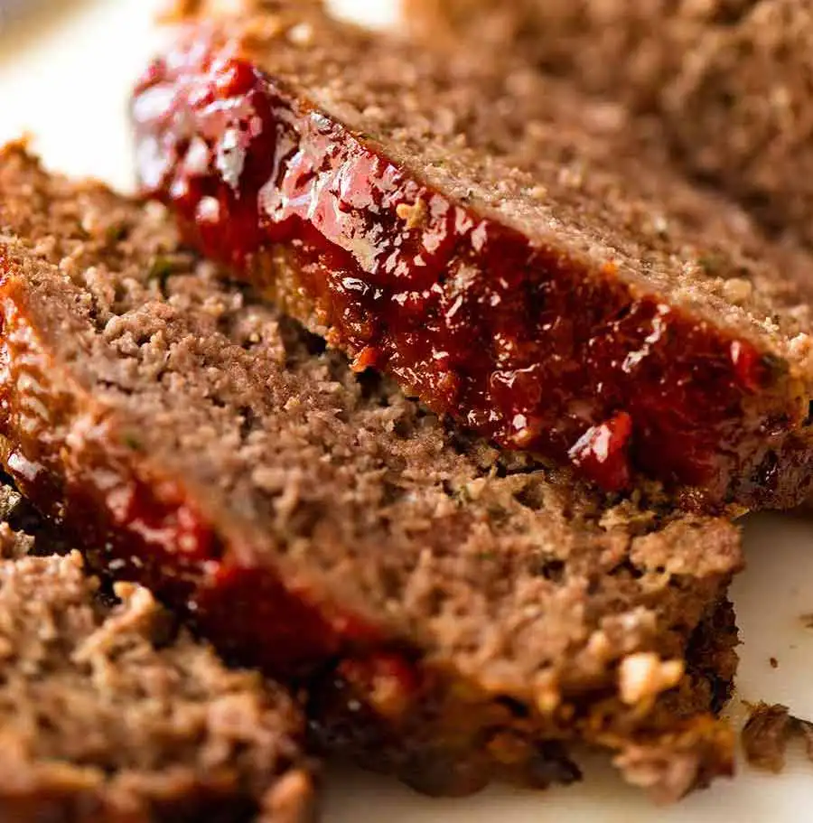

Meatloaf

Description
This easy meatloaf recipe is a family favorite and is super easy to make. Serve with a side of your choice for the perfect comfort meal.
The meatloaf has a flavorful zesty topping that caramelizes and sticks to the meatloaf as it bakes.
Ingredients
- 1/2 medium onion, diced
- 1 teaspoon butter
- 2 eggs
- 3/4 cup milk
- 3/4 cup italian or seasoned breadcrumbs
- 2 pounds ground beef
- 1 tablesppon ketchup or chili sauce
- 1 teaspoon italian seasoning
- 2 tablespoons parsley
- salt & pepper
- 1/2 cup chili sauce
- 1/2 cup ketchup
- 2 tablespoons brown sugar
Steps
- Preheat oven to 350 degrees F. Spray a foil lined baking tray with cooking spray and set aside.
- In a small pan, cook onions in butter over medium low heat until tender. Let cool completely.
- In a medium bowl combine eggs, milk, and breadcrumbs. Allow mixture to sit for 5-10 minutes.
- Add the ground beef, onions, 1 tablespoon of ketchup or chili sauce, italian seasoning, parsley, and salt & pepper to taste. Mix until combined.
- Form and 8" X 4" loaf on the prepared baking tray. Bake for 40 minutes.
- Combine 1/2 cup chili sauce, 1/2 cup ketchup, and 2 tablespoons brown sugar. Spread mixture over the meatloaf and bake for an additional 10-15 minutes.
- Ensure meatloaf reaches 160 degrees F. Broil 1-2 minutes if desired.
- Allow meatloaf to rest for 10 minutes before slicing.